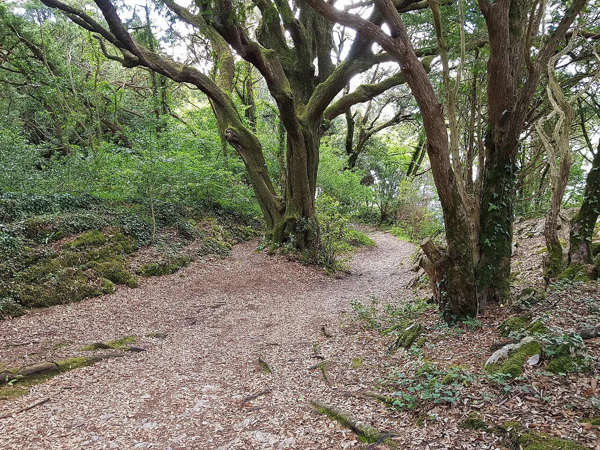
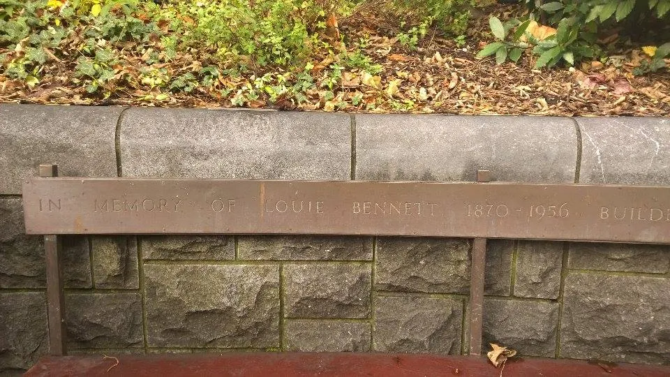
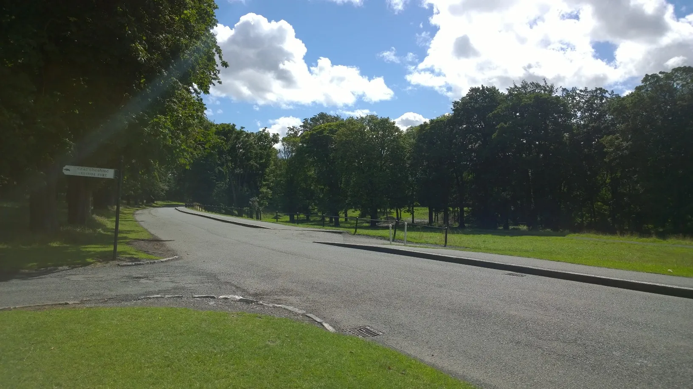
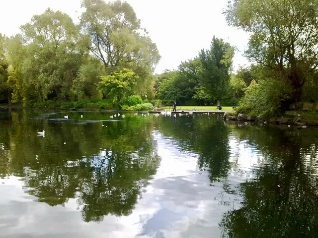
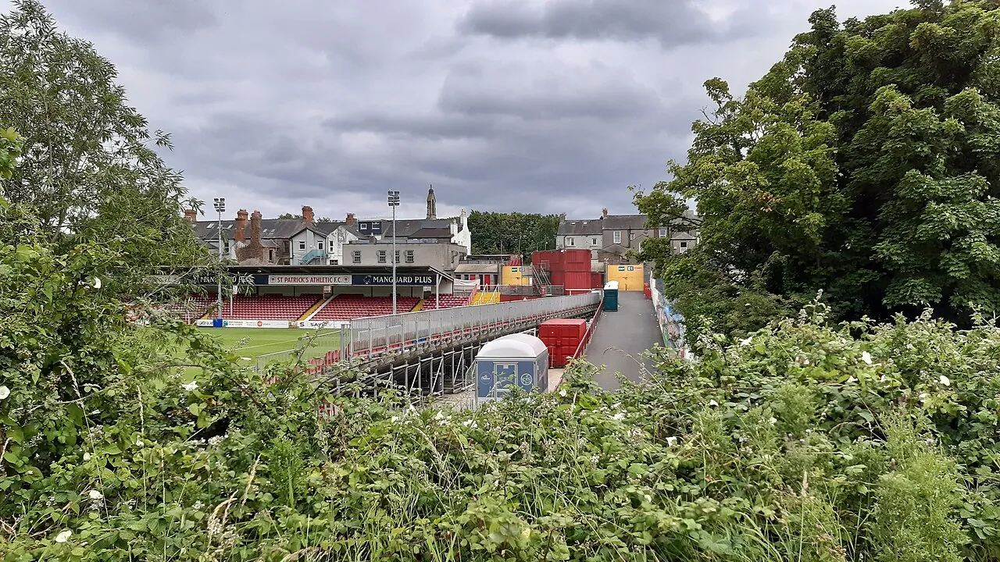

Why Green Spaces Matter
When you hear "green spaces" you probably think of a local park. But there's a lot more to it than that. These places do serious work behind the scenes for our health, our wildlife and how we connect with each other.
A National Asset for Health and Community
Ireland has a pretty great network of green spaces. You've got the massive 709-hectare Phoenix Park in Dublin, but also small community gardens tucked into towns and villages all over the country. They give wildlife a home, soak up CO2, cool down our cities in summer, and give us somewhere free to go for a walk or just sit and think.
Here's the thing though - people who live a short walk from a green space tend to feel less stressed and get more exercise. It sounds simple, but the data really backs it up. The UN picked up on this connection too. SDG 3 is all about good health and wellbeing, and SDG 11 pushes for cities where everyone has access to green public spaces, not just the people who can afford them.
Did you know? The World Health Organization says everyone should have a green space of at least half a hectare within 300 metres of their front door. How close is yours?

Have a Look Around
We've split the project into six pages. Here's what you'll find if you keep clicking through.

Health Benefits
What does spending time in nature actually do for you? We break down the mental, physical and social benefits on this page.

Green Spaces in Ireland
From Phoenix Park to the Wild Atlantic Way, here are some of the green spaces that matter most to communities around Ireland.

Data & Statistics
We pulled together real data on green space access and wellbeing across Irish cities. The numbers tell a pretty clear story.

Wellbeing Calculator
Answer a few quick questions about your own habits and we'll give you a personal wellbeing score plus some tips on how to improve it.
“We need green spaces in our cities more than ever. They are not a luxury - they are essential for our physical and mental health.” - Sir David Attenborough